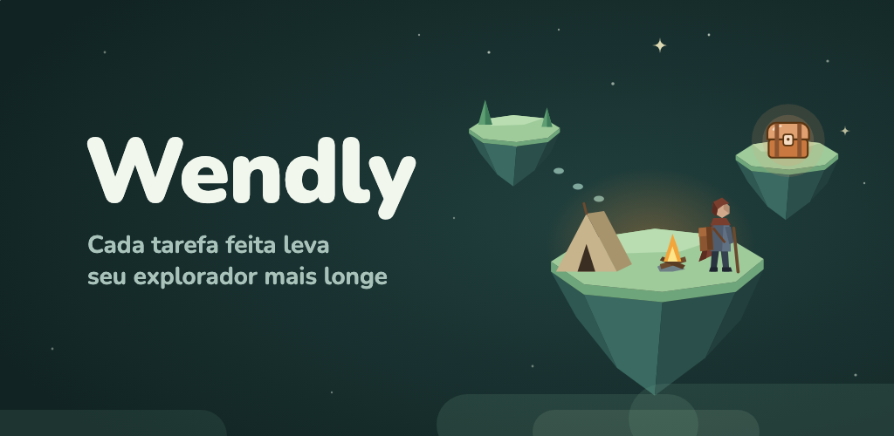

Sua lista de tarefas agora tem um explorador
Cada tarefa feita enche a mochila dele. Você toca em Partir, ele sai em expedição pelo mapa e volta horas depois com moedas, baús e, às vezes, uma lembrança rara.
Baixar na Google PlayPor enquanto, só para Android. Sem cadastro, sem anúncios e sem compras.
Como funciona
- Anote o que precisa fazer hoje.
- Cada tarefa concluída vai para a mochila do explorador.
- Toque em Partir: ele sai em expedição pelo mapa de ilhas.
- Horas depois, ele volta com o que encontrou.
Enquanto você vive o seu dia, o mundo do Wendly anda sozinho. Abrir o app é ver o que chegou.
Tem iPhone? O Wendly ainda não está na App Store. Entre na lista de espera no Instagram e avisamos quando chegar.